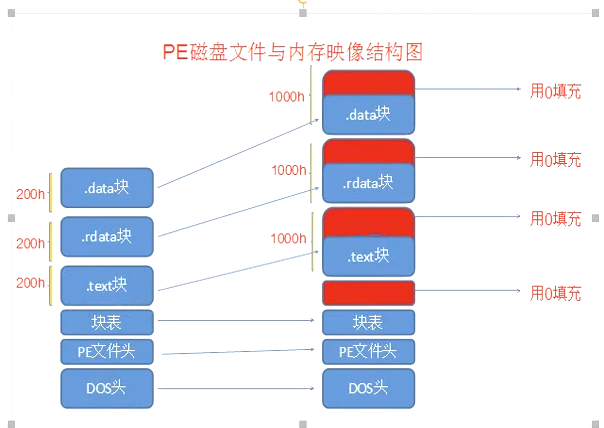
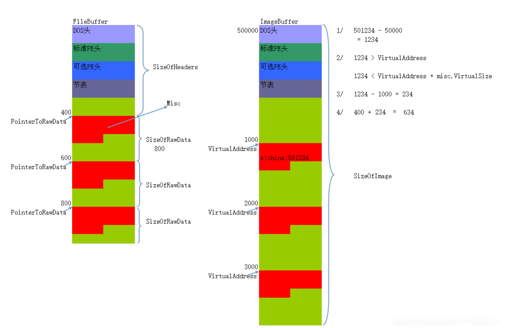

# 引出问题
如果想改变一个全区变量的初始值，该怎么做？
如果一个变量有值，那这个值是存储在 PE 中的。
有一个小细节：定义一个变量，当它加载在内存中的时候才会有默认初始值的。在 C 中定义一个整型变量，不给它赋值打印它，默认是为 0 的。
面临的问题是什么？

# 转换
RVA: 相对虚拟地址
FOA: 文件偏移地址
- RVA TO FOA
即我们现在知道内存状态下的偏移，需要找到文件状态下的偏移。
步骤如下图：

step1：内存中的地址减去内存基址得到偏移，即 RVA。
step2：循环遍历节表中各个节的信息，判断在哪个节中。（需要满足： 内存偏移 + 节数据没对齐的大小 > image_panyi > 内存偏移）
step3: 找出在哪个节后，减去该节在内存中的偏移（VirturalAddress）得到在该节中的相对偏移。
step4: 上一步得到的该节的相对偏移 + 该节在文件中的偏移 (PointToRawData)，即得到 FOA
步骤 1：循环扫描区块表得出每个区块在内存中的起始 RVA（根据 IMAGE_SECTION_HEADER 中的 VirtualAddress 字段），并根据区块的大小（根据 IMAGE_SECTION_HEADER 中的 SizeOfRawData 字段）算出区块的结束 RVA（两者相加即可），最后判断目标 RVA 是否落在该区块内。
步骤 2：通过步骤 1 定位目标 RVA 处于具体的某个区块中后，那么用目标 RVA 减去该区块的起始 RVA ，这样就能得到目标 RVA 相对于起始地址的偏移量 RVA2.
步骤 3：在区块表中获取该区块在文件中所处的偏移地址（根据 IMAGE_SECTION_HEADER 中的 PointerToRawData 字段）, 将这个偏移值加上步骤 2 得到的 RVA2 值，就得到了真正的文件偏移地址。
- FOA TO RVA
现在我们已经知道如何从内存中的偏移转化为文件中的偏移。现在是它的逆过程
step1: 文件中的地址减去文件基址，得到在文件中的偏移，即 FOA。
step2: 循环遍历节表中各个节的信息，判断在哪个节中。（文件对齐 + 文件偏移 > file_panyi > 文件偏移）
step3: 找出在哪个节后，减去该节在文件中的偏移（VirturalAddress）得到在该节中的相对偏移。
step4: 上一步得到的该节的相对偏移 + 该节在内存中的偏移 (VirtualAddress)，即得到 RVA。
相对虚拟地址（RVA） = 虚拟内存地址（VA） - 装载基址（Image Base)
# 总结
RVA 转换 FOA，在以后的破解或者保护中只是基本功而已！基础要打牢。
# Reference
https://blog.csdn.net/z17805008775/article/details/105374503
# 碰到的问题
2021 年 5 月 12 日 14:08:06
# 前言
学到重定位表了，发现文件的内存对齐与文件对齐都一样，可偏偏重定位表中的 VirtualAddress (RVA) 0x37000 转换为 FOA 为 0x35000？？？？
于是下定决心搞定它
# 原因
是由于节的 VirtualSize>SizeOfRawData, 则即使文件的内存对齐与文件对齐都相同，节在内存中对齐后的大小和在文件中对齐后的大小也会不同。进而偏移地址也就不同。
而我对 RVA 和 FOA 转换错误的认为只要 内存对齐与文件对齐相等，则 RVA 一定等于 ROA。